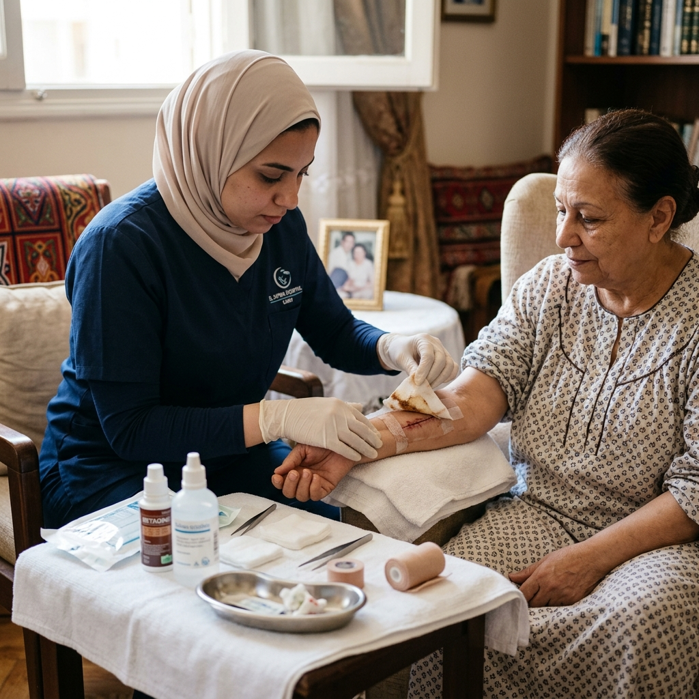

طرق الوقاية من قرح الفراش لكبار السن وخطوات تغيير الجروح بشكل معقم وآمن بالمنزل.

تقرحات الفراش (Bedsores) هي مشكلة شائعة ومؤلمة تواجه كبار السن والمرضى طريحي الفراش لفترات طويلة. الوقاية منها أسهل من علاجها، ولكن عند ظهورها، يجب التعامل معها طبياً بحذر شديد.
التقليب المستمر للمريض كل ساعتين، استخدام مرتبة هوائية، والحفاظ على جفاف ونظافة الجلد هي أساسيات الوقاية. كما تلعب التغذية الغنية بالبروتين دوراً في الحفاظ على سلامة الجلد.
يجب تنظيف القرحة بمحاليل معقمة واستخدام غيارات طبية متخصصة (مثل غيارات الفضة أو الهيدروكولويد). تغيير الجروح يحتاج لبيئة معقمة وممرض خبير لتجنب تلوث الجرح وتدهوره.
نوفر في الشيخ زايد، المعادي، والتجمع الخامس خدمة تغيير الجروح الطارئة والدورية بواسطة تمريض متخصص لضمان التئام سريع وآمن لجروح السكري وقرح الفراش.
🔔 نصيحة سريعة: إذا كان المريض يعاني من قرح فراش من الدرجة الثانية أو الثالثة، لا تخاطر بتغييرها بنفسك. اطلب خدمة تغيير الجروح الطبية الآن أو تواصل معنا.
فريق رعاية بيتي جاهز لتقديم أفضل رعاية طبية مهنية في منزلك.